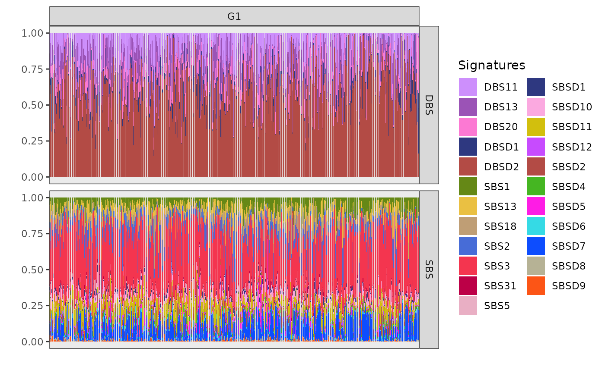

Fit on real data
Fit_breast_data.RmdPackage Setup
For detailed explanation, please visit the package setup.
knitr::opts_chunk$set(warning = FALSE, message = FALSE)
configure_environment(envname="bascule-env", use_default=TRUE)
py = reticulate::import("pybascule")Data
We want to analyze 2,682 breast tumour samples from the GEL, ICGC,
and HMF cohorts. For this purpose We load the breast tumor type data
object breast_data (for more details visit here)
from the bascule package, and retrieve the input data
(counts) from it.
The counts object is a list which contains two SBS and
DBS matrices (data.frame), both with 2682 rows
(representing samples), and 96 columns for SBS context and 78 columns
for DBS context (representing mutational contexts). The values of the
matrices are number of the mutations for corresponding sample and
mutational context. The counts matrix can extracted from bascule fit
object using the get_input function in the package.
# load breast fit data from package
data("breast_data")
# extract the bascule fit object for breast tumor type
x = breast_data$x
x
#> ── [ Bascule ] samples with 0 total mutations. ───────────────────────────────
#>
#> ── SBS catalogue signatures (5 columns shown max)
#> A[C>A]A A[C>A]C A[C>A]G A[C>A]T A[C>G]A
#> SBS1 0.000000000 0.000000000 0.000000000 0.000000000 0.000000000
#> SBS2 0.000000000 0.000000000 0.000000000 0.000000000 0.000000000
#> SBS3 0.020808323 0.016506603 0.001750700 0.012204882 0.019707883
#> SBS5 0.011997600 0.009438112 0.001849630 0.006608678 0.010097980
#> SBS13 0.000000000 0.000000000 0.000000000 0.000000000 0.000000000
#> SBS18 0.051533859 0.015810387 0.002431598 0.021414070 0.001731137
#> SBS31 0.009534985 0.018490274 0.001659127 0.006276698 0.008315626
#>
#> ── De novo signatures (5 columns shown max)
#> A[C>A]A A[C>A]C A[C>A]G A[C>A]T A[C>G]A
#> SBSD1 0.0013021588 0.001086904 0.0010003703 0.001298402 0.0009850989
#> SBSD2 0.0086599355 0.003850128 0.0019153069 0.007406929 0.0097875630
#> SBSD4 0.0071512359 0.005733336 0.0339316145 0.004755269 0.0046120340
#> SBSD5 0.0027345754 0.002193904 0.0007122308 0.002187520 0.0017807318
#> SBSD6 0.0021000142 0.001562314 0.0009072816 0.001607518 0.0012848607
#> SBSD7 0.0225498791 0.017800982 0.0031354088 0.006062250 0.0009157615
#> SBSD8 0.0008454395 0.000797856 0.0004881849 0.001464493 0.0012844335
#> SBSD9 0.0010254879 0.001912371 0.0003545345 0.004855627 0.0018162442
#> SBSD10 0.0035070582 0.002635648 0.0003777245 0.002224826 0.0006770983
#> SBSD11 0.0369320129 0.039624678 0.0067355421 0.053949864 0.0037204620
#> SBSD12 0.0012540791 0.001046035 0.0008772321 0.001602001 0.0031040453
#>
#> ── DBS catalogue signatures (5 columns shown max)
#> AC>CA AC>CG AC>CT AC>GA AC>GG
#> DBS11 0.001369907 0.000193987 0.000755948 0.000441970 0.002249847
#> DBS13 0.002155121 0.000051500 0.002853398 0.002762299 0.001464314
#> DBS20 0.005031140 0.001909180 0.002372220 0.001585940 0.002634990
#>
#> ── De novo signatures (5 columns shown max)
#> AC>CA AC>CG AC>CT AC>GA AC>GG
#> DBSD1 0.02705068 0.002431567 0.009581317 0.004772051 0.003079476
#> DBSD2 0.01119519 0.001638339 0.005947791 0.012590619 0.001679650
# retrieve the input data of the breast tumor type
counts = get_input(x, matrix=TRUE, reconstructed=FALSE)
# dimensions of SBS and DBS count matrices
dim(counts[["SBS"]])
#> [1] 2682 96
dim(counts[["DBS"]])
#> [1] 2682 78
# display first 5 rows and first 8 columns of SBS and DBS matrices
head(counts[["SBS"]][, 1:8])
#> A[C>A]A A[C>A]C A[C>A]G A[C>A]T A[C>G]A A[C>G]C A[C>G]G A[C>G]T
#> GEL-2474917-11 131 81 11 70 71 43 10 106
#> GEL-2516072-11 279 199 32 202 68 56 20 69
#> GEL-2905314-11 54 54 11 38 20 19 9 34
#> GEL-2464811-11 48 36 5 35 17 11 3 21
#> GEL-2142020-11 33 18 7 16 8 3 5 14
#> GEL-2674175-11 49 40 5 31 31 17 4 19
head(counts[["DBS"]][, 1:8])
#> AC>CA AC>CG AC>CT AC>GA AC>GG AC>GT AC>TA AC>TG
#> GEL-2474917-11 0 0 0 0 0 0 1 0
#> GEL-2516072-11 1 0 0 1 0 0 2 1
#> GEL-2905314-11 0 0 0 0 0 0 0 0
#> GEL-2464811-11 0 0 0 1 0 1 0 0
#> GEL-2142020-11 0 0 0 0 0 0 1 0
#> GEL-2674175-11 0 0 0 0 0 0 0 0As a reference catalogue for breast cancer, we selected signatures SBS1, SBS2, SBS3, SBS5, SBS13, SBS17, SBS18, SBS31, for SBS context and signatures DBS11, DBS13, and DBS20, for the DBS context.
These signature collections are a subset of the COSMIC_sbs_filt and COSMIC_dbs catalogues.
Fit the Model
based on prior biological knowledge we expect to see the SBS3 as one
of the signatures included in both matrices, but in practice, the SBS3
signature is not present in the output of the model. Here we give higher
weights to SBS3 using hyperparameters arguments (visit here
for more information), to keep this signature in final output.
alpha_conc <- list("SBS3"=100)We run the model by executing the fit function from
bascule package which performs the non-negative matrix factorization to
deconvolute the counts matrix to lower rank matrices.
x_pre_refinement = fit(
counts=counts,
k_list=0:25,
cluster=15,
reference_cat=reference_cat,
n_steps=3000, lr=0.005,
seed_list=c(19,255,18321,331),
hyperparameters=list("alpha_conc"=alpha_conc),
store_fits=TRUE,
py=py,
CUDA=TRUE,
autoguide=TRUE
)x_pre_refinement is the output of the models, which is a
bascule object, consisting of a list with three components:
input, nmf, and clustering.
-
inputcontains all the data used to fit the model, -
nmfholds the results of the matrix factorization, and -
clusteringstores the outcomes of the patient clustering phase.
The analysis identified 19 SBS (12 de novo) and 5 DBS (2 de novo) signatures.
De novo Signatures Refinement
After performing NMF, we obtain a list of de novo signatures, but
these may be mixtures of different existing signatures inferred by the
model. To address this issue, we aim to eliminate any inferred de novo
signatures that can be represented as a linear combination of other
signatures. This is done using the refine_denovo_signatures
function, applied to the bascule object generated from the
fit function in the previous step
x_refined = refine_denovo_signatures(x_pre_refinement)After a refinement step, one de novo signature from SBS context was removed due to its explainability by other signatures. we identified 18 SBS (11 de novo) and 5 DBS (2 de novo) signatures after refinement.
Patients Re-clustering
After applying the signature refinement step, we may obtain a new set
of signatures, requiring us to repeat the patient clustering process. To
do this, we use the fit_clustering function from the
bascule package on the bascule object generated from the refinement
step.
x_cls = fit_clustering(
x_refined,
cluster=15,
seed_list=c(19,255,18321,331),
hyperparameters=list("alpha_conc"=alpha_conc),
store_fits=TRUE,
py=py,
CUDA=TRUE,
autoguide=TRUE
)we proceeded with the merging step and the tool detected 14 clusters among the breast cancer samples.
Merging
we use the merge_clusters() function to merge the
similar clusters. This function will iteratively merge clusters that
result similar in the centroid. The merging will stop as soon as the
cosine similarity between all pairs of clusters is below cutoff
value.
x_merged <- merge_clusters(x_cls)As we saw in re-clustering step, the tool detected 14 clusters among the breast cancer samples. We then applied an iterative merging function, resulting in 5 clusters, using a cutoff value of 0.8.
Mapping
Later, with help of convert_dn_names function we map the
de novo signatures to known signatures from the COSMIC catalogue and the
findings from Degasperi et al. If similarity between the de novo
signatures and a signature from known catalogues (COSMIC, Degasperi et
al.) is higher than threshold, we substitute the de novo signatures with
corresponding known signatures, so we can likely take advantage of their
known etiology to analyze our results.
x <- convert_dn_names(
x_merged,
reference_cat = list(
SBS=COSMIC_sbs_filt,
DBS=COSMIC_dbs,
DEGASPERI_SBS=Degasperi_SBS,
DEGASPERI_DBS=Degasperi_DBS
),
cutoff = 0.8)within the SBS context, 6 de novo signatures corresponded to COSMIC signatures SBS7a, SBS17b, SBS26, SBS40a, SBS90, and SBS98. Additionally, one de novo signature aligned with the common signature SBS8, and two signatures matched rare signatures SBS44 and SBS97, both from the Degasperi et al. study. In the DBS context, we mapped two de novo signatures to COSMIC signatures DBS14 and DBS20.
Visualization
The bascule object obtained from the previous steps is ready for visualization step. all the visualization functions take the bascule object as the input.
Fitting Scores
The plot_scores visualize the model selection steps. The
plot display the BIC and likelihood scores of NMF run for each k value
(number of de novo signatures) for both SBS and DBS context. In the
plot, the x axis is related to k values and the
y axis is related to scores (BIC and Likelihood). The model
selects the k value with lowest BIC score in iterative inference
process.
plot_scores(x)
#> Joining with `by = join_by(parname, value_fit, seed, type)`
Based on the BIC score, the model with 11 de novo signatures for SBS and 2 de novo signatures for DBS provides the best fit compared to all other models.
Mutational Signatures
We utilize the plot_signatures function to visualize the
mutational signatures inferred by the model. The types and
signames arguments allow us to specify the context type and
the list of signatures to plot. The get_denovo_signames
function is used to obtain the list of de novo signature names. Each
plot consist of multiple signatures plot with their name on the right
hand side.
plot_signatures(x, types = "SBS", signames = get_denovo_signames(x))
The plot above shows 11 de novo signatures inferred by the tool in
SBS context. The x axis shows the 96 possible SBS contexts
and the y axis declare their respective density.
plot_signatures(x, types = "DBS", signames = get_denovo_signames(x))The plot above shows 2 de novo signatures inferred by the tool in DBS
context. The x axis shows the 78 possible DBS contexts and
the y axis declare their respective density.
Similarity Plot
Function plot_similarity_reference plots the similarity
between de novo and COSMIC signatures based on cosine similarity
values.
The heatmap plot on the left inspects the similarities between the de novo and COSMIC signatures. The rows are de novo signatures, columns are COSMIC signatures and the values are cosine similarity between the corresponding signatures. On the right you can see the signatures plot comparison of the most similar pairs in the heatmap plot. Since in the mapping step all the de novo signatures were mapped to known signatures with some threshold value (0.8 as default value), here you can see only similarity values below the mentioned threshold in mapping step for de novo signatures.
Clusters Centroids
The plot_centroids() function is used to plot the
clustering centroids.
Here, we visualize the clustering centroids of mutational signatures
clusters. This plot provides a clear representation of how the
mutational signatures are grouped based on their similarities. The
plot_centroids function is used to generate this
visualization, offering insight into the relationships and distances
between different mutational signatures. By examining this plot, we can
better understand the patterns and structure of the signature clustering
results.
plot_centroids(x)
#> Scale for fill is already present.
#> Adding another scale for fill, which will replace the existing scale.
#> Warning: No shared levels found between `names(values)` of the manual scale and the
#> data's colour values.You can inspect the centroids for each cluster in two SBS and DBS
context. the x axis defines the clusters, the
y axis defines the density of signatures and the colors
represent the signatures which are present in the clusters. Using the
centroids we can analyze the patients clustering outcome. For detailed
information we can follow the exposure plots of each cluster to find out
the clustering logic and possible etiology behind it.
Exposures Matrix
The plot_exposures function is used to visualize the
inferred exposure matrix, where x axis represent samples,
y axis represents the mutational signatures relative
contributions and the colors identify the mutational signatures. The
exposure matrix displays the contribution of each mutational signature
across different samples. This plot provides a clear overview of how
different mutational signatures contribute to the overall mutational
profile across the dataset. For clearer visualization, we plot the
exposure matrix for each cluster separately. The clusters
argument is used to specify which cluster to plot.
plot_exposures(x, clusters = c("G0"))
#> Scale for fill is already present.
#> Adding another scale for fill, which will replace the existing scale.
#> Scale for fill is already present.
#> Adding another scale for fill, which will replace the existing scale.
#> Scale for fill is already present.
#> Adding another scale for fill, which will replace the existing scale.
#> Warning: No shared levels found between `names(values)` of the manual scale and the
#> data's colour values.In the exposure plot for cluster G0 (n=272), the dominant mutational signatures are SBS2 and SBS13, along with DBS11, DBS13, and DBSD2 (mapped to DBS2 from COSMIC). These signatures are associated with APOBEC enzyme activity. APOBEC-driven mutational processes are frequently observed in HER2-positive breast cancers, suggesting a strong link between this cluster and HER2-driven tumorigenesis.
plot_exposures(x, clusters = c("G1"))
#> Scale for fill is already present.
#> Adding another scale for fill, which will replace the existing scale.
#> Scale for fill is already present.
#> Adding another scale for fill, which will replace the existing scale.
#> Scale for fill is already present.
#> Adding another scale for fill, which will replace the existing scale.
#> Warning: No shared levels found between `names(values)` of the manual scale and the
#> data's colour values.
The cluster G1 (n=2058) exposure plot, which is the largest among all, shows a strong presence of SBS3, SBSD11 (mapped to SBS8 from Degasperi et al.), DBSD2 (mapped to DBS2 from COSMIC) and DBS13. SBS3 and DBS13 are caused by homologous recombination deficiency (HRD); DBS2, instead, is linked to smoking in some cancers but is often observed also in cancers not directly linked with tobacco exposure. Based on these prevalent signatures, cluster G1 can be associated with triple-negative breast cancers.
Clusters G10 (n=169), G11 (n=69), and G13 (n=114) share similar SBS patterns, including exposure to SBS1, SBS2, SBS3, SBS11, and SBS13, pointing to a mix of APOBEC activity, HRD, and ageing-related mutational processes. BASCULE can differentiate these three clusters based on DBS exposure.
plot_exposures(x, clusters = c("G10"))
#> Scale for fill is already present.
#> Adding another scale for fill, which will replace the existing scale.
#> Scale for fill is already present.
#> Adding another scale for fill, which will replace the existing scale.
#> Scale for fill is already present.
#> Adding another scale for fill, which will replace the existing scale.
#> Warning: No shared levels found between `names(values)` of the manual scale and the
#> data's colour values.
Cluster G10 is notably associated with the mutational signatures DBSD2 (mapped to DBS2 from COSMIC) and DBS11. These signatures are linked to the activity of the APOBEC enzyme family. The strong link between G10 and these signatures suggests that APOBEC activity may be a driving factor behind the mutational processes in this cluster.
plot_exposures(x, clusters = c("G11"))
#> Scale for fill is already present.
#> Adding another scale for fill, which will replace the existing scale.
#> Scale for fill is already present.
#> Adding another scale for fill, which will replace the existing scale.
#> Scale for fill is already present.
#> Adding another scale for fill, which will replace the existing scale.
#> Warning: No shared levels found between `names(values)` of the manual scale and the
#> data's colour values.
The cluster G11 as the smallest cluster is primarily exposed to DBSD1 (mapped to DBS14 from COSMIC), a signature reported as artifactual in COSMIC. However, the presence of DBS13 in G11, suggests that this cluster is also linked to homologous recombination deficiency (HRD).
plot_exposures(x, clusters = c("G13"))
#> Scale for fill is already present.
#> Adding another scale for fill, which will replace the existing scale.
#> Scale for fill is already present.
#> Adding another scale for fill, which will replace the existing scale.
#> Scale for fill is already present.
#> Adding another scale for fill, which will replace the existing scale.
#> Warning: No shared levels found between `names(values)` of the manual scale and the
#> data's colour values.
Cluster G13 shows significant exposure to the mutational signatures DBS13 and DBS20. These particular signatures are associated with homologous recombination deficiency (HRD)-related processes. The presence of DBS13 and DBS20 in cluster G13 suggests that the samples in this group may be influenced by similar underlying genomic instability and repair deficiencies.